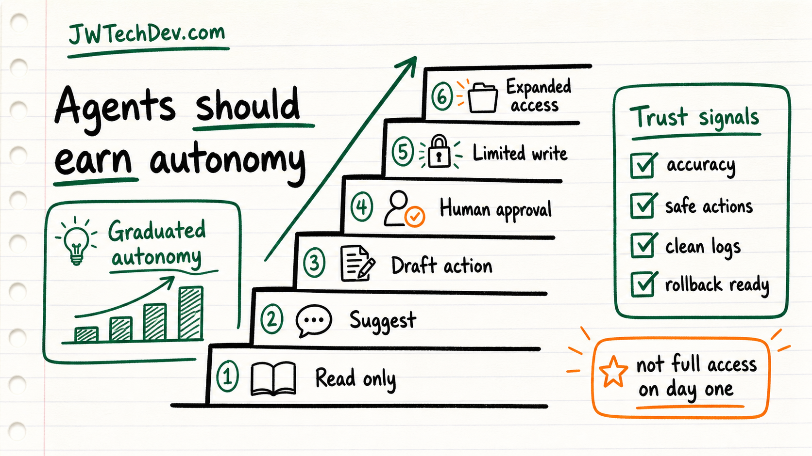

AI agents should earn autonomy over time
The useful question is not whether agents should be autonomous. It is what they have proven they can safely do.

Quick answer
Do not treat agent access as all-or-nothing. A better model is graduated autonomy: agents start with low-risk permissions, earn expanded capability through reliable behavior, and lose access when their performance drops.
The binary problem
A lot of AI deployments get stuck between two weak choices. Either the agent is read-only and cannot do useful work, or it gets too much access before anyone has evidence that it behaves well.
That is not how mature systems usually work. We do not hand every human, service account, or automation the same permission level on day one. Agents should be no different.
Autonomy should be earned
Graduated autonomy turns trust into a measurable system. The agent can move from reading context, to suggesting actions, to drafting changes, to requesting approval, to limited writes, and only later to broader actions.
The key is that the permission level is tied to signals: accuracy, safe behavior, clean logs, rollback readiness, and the risk level of the task.
This is a cloud pattern
The AWS Architecture Blog connects graduated autonomy to cloud services such as AgentCore, policy, evaluation, and persistent trust state. The product names may change over time, but the architecture lesson is durable.
Store trust state. Evaluate behavior. Use deployment gates. Keep logs. Roll back privileges when the agent stops meeting the standard.
What builders should do
Create a permissions ladder for every agent workflow.
Define what evidence moves an agent up a level and what events move it down.
Keep high-impact actions behind approval until the system has real operating history.
Make rollback a first-class requirement before expanding access.
Bottom line
The future is not agents with unlimited access. The future is agents with measured trust, scoped authority, and a path to earn more responsibility without skipping governance.
Sources checked
Want the starter kit?
Grab the free JWTechDev.com starter kit if you want a practical way to connect cloud basics, AI workflows, and approval gates.
Get resources